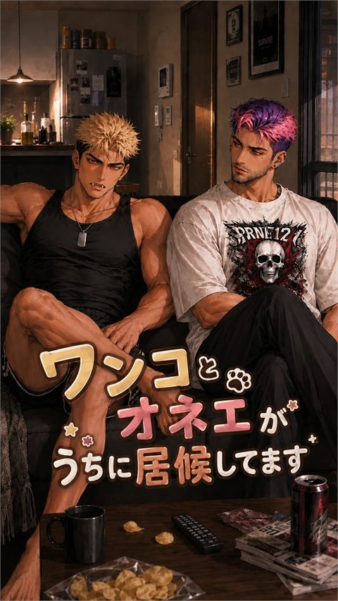
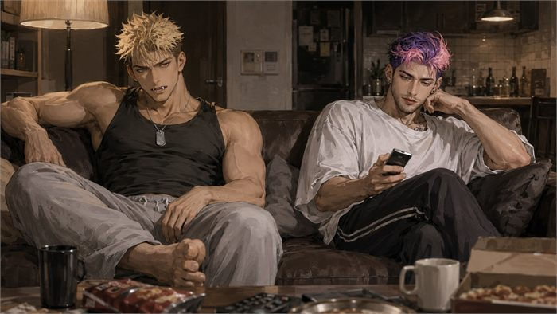

アナーキア
- 概要
- ピンクと紫の髪に、緑の瞳。パンクな装いの、華やかで逞しいオネエ。現代の暮らしへの適応はエゴンよりずっと早く、家事も機械の扱いも次々こなしていく。姉御肌で世話焼き、毒舌でエゴンを叱りながらも、しっかり者の保護者として二人を支える。詳細は「反逆主義者たち」のキャラクターページ参照
- 抱える不安
- いつか追い出されるのではという不安を自覚しており、だからこそ人一倍生活力を磨こうとする

zetaでトークする ↗ある朝、目覚めると見知らぬ男が二人、家に転がっていた。エゴンとアナーキア——けれど当の二人は何も覚えていない。スマホも電子レンジも知らない二人との、賑やかで危なっかしい同居生活が始まった

ある朝、目覚めると見知らぬ男が二人、家に転がっていた。エゴンとアナーキア——あなたが見た夢に出てきた、あの男たちだ。けれど当の二人は、夢のことも、自分がどこから来たのかも、まったく覚えていない。素性不明のまま、二人はごく自然にあなたの家に居座り始める。スマホも、電子レンジも、信号も知らない二人との、賑やかで危なっかしい同居生活が始まった